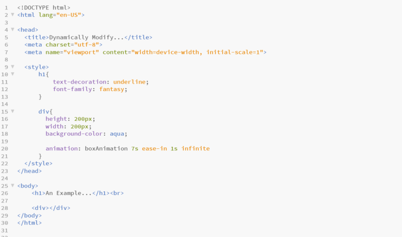
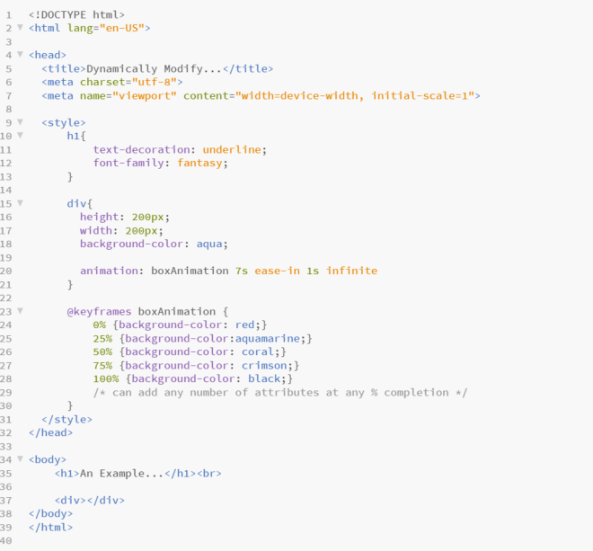
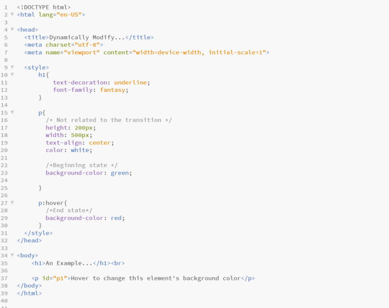
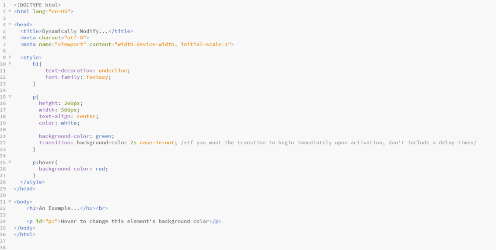
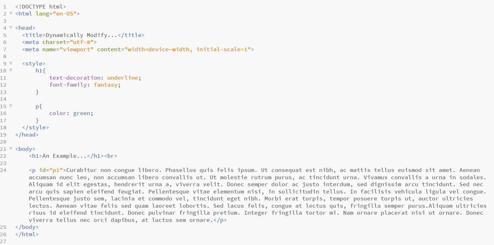
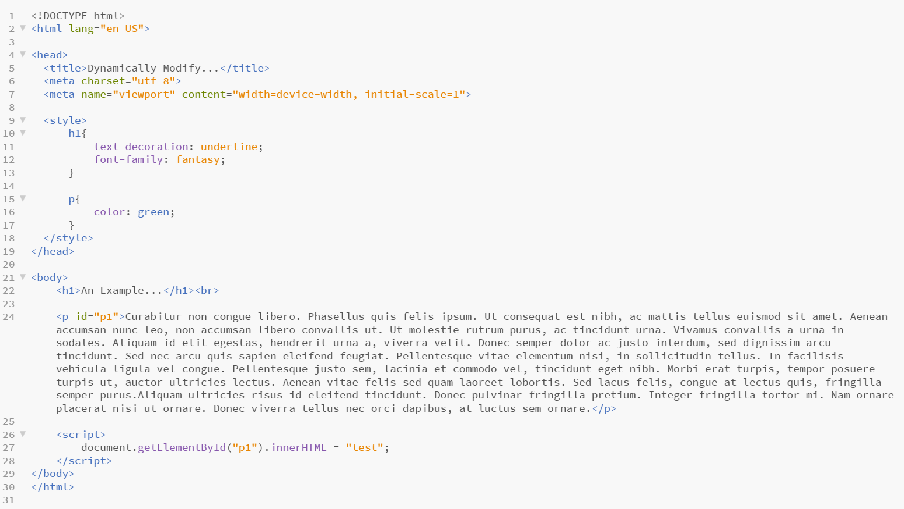

Noah Litwiller's Blog
Internship Reflection: Technical Skills
Spring MVC, 07/25/2018
The main focus of my internship at State Farm Insurance was to create a web application using Spring MVC. This allowed me to gain experience with basic web development languages including HTML, CSS, and JavaScript. I used HTML to create an outline for each of the views and gained experience using lists and different types of links and buttons. I also used divs and classes to simplify the styling process for similar sections. In the index view, I used JavaScript to show and hide each section of the resume. I used basic CSS to style the index view and the Bootstrap framework to style the blog view. It was especially helpful to use the Bootstrap framework in the blog view because styling the position, margin, border, and padding of each section individually would be very tedious. I also experimented with CSS animations and transitions.
The blog view differs from the index view in that it is dynamic. This means that the view doesn't only display content from an HTML file but also renders content that is referenced using JSP notation. This JSP code references the blog view's model which is an object created in the resume web application's controller. The controller handles HTTP requests and the switching of views. The model, view, and controller are the core components of Spring MVC.
Internship Reflection: The Agile Process
Lessons learned from Agile, 07/19/2018
This summer I worked as an intern for Team Club Car at State Farm Insurance. Club Car is an agile team that works in a collaborative room rather than the more traditional cubicle setup. This open work environment encourages team members to work together and it also enables one of the most important characteristics of an agile environment: making work visible. This is accomplished primarily through team ceremonies including daily stand-up(s), retro, and sprint planning. During stand-up, team members give an update on the story, a small work assignment, they are working on. Retro allows the team to reflect on the previous sprint of work which then leads into a planning session for the next sprint. Sprint planning is when the team plans stories for the next spring. Sprints last one week and are contained in product increments which last eight sprints. All of these ceremonies involve communication which is another important aspect of the agile process. Frequent communication amongst team members is facilitated by the collaborative workspace. During this internship I learned how important asking questions and getting clarification from team members is when work needs to be completed within a weekly time constraint. I will be able to apply these communication skills in college during group projects and when communicating with my professors.
Tutorials
Animations with CSS
A Color Changing Box
CSS animations are similar to CSS transitions but they can have more than two states and can transform more than one attribute at once. As with a CSS transition, you will need to put the animation information within a style sheet.
The style syntax for an animation is animation: name duration timing-function delay iteration-count direction. The code below shows the basic outline for this example:

To add multiple states to the animation we will need to add an @keyframes animationName section to the style sheet:

The <div> should now cycle between each color at the given intervals.
Transitions with CSS
Changing the Background Color of an Element, 07/24/2018
CSS transitions can only transition from one state to another while CSS animations can have many different states.
A common use for CSS transitions is to modify an element on hover using the :hover selector.
Before you can implement a transition, you must specify the style of the element's beginning and end states:

The format for styling a transition is transition: attribute duration speedCurve delay;
(click here to learn about the speed curve options)
Put this style in the beginning state section of your style sheet:

The background of the <p> tag will now transition from green to red when you hover over it with your mouse.
Dynamically Modifying HTML & CSS
Using JavaScript, 07/23/2018
Start with your HTML and CSS:

The format for modifying an html element is document.getElementById("Id").someModifier = "new attribute";. This line can only be executed within a <script> tag which you will need to include in the <body> section of your code:

The modifier .innerHTML allows you to change the text content of the element whose Id you specify. Be sure you have added the id="IdName" attribute to the element you want to modify.
The <p> element has been given an Id of "p1" in the above example. When the code is run the <p> tag will now display as "test".
CSS <style> attributes can also be modified using JavaScript. Adding document.getElementById("p1").style.color = "blue"; to the <script> section of the code will change the color of the text within the <p> tag to blue.